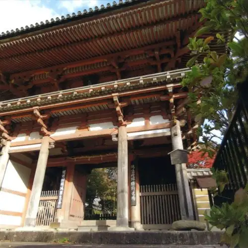
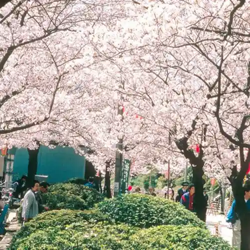

Japan / Osaka / Ikeda
Ikeda · Osaka
Ikeda
Highlighted on the Osaka map.

Ikeda City Hall

Sights · Things to do · Places to eat · Places to stay · Day-to-day services
Nearby in Osaka: ← Ibaraki · Izumi →
Other towns: Chihayaakasaka · Daito · Fujiidera · Habikino · Hannan · Higashiosaka · Hirakata · Ibaraki · Izumi · Izumiotsu · Izumisano · Kadoma · Kaizuka · Kanan · Kashiwara · Katano · Kawachinagano · Kishiwada · Kumatori · Matsubara · Minoh · Misakicho · Moriguchi · Neyagawa · Nose · Osaka · Osakasayama · Sakai · Sennan · Settsu · Shijonawate · Shimamoto · Suita · Tadaoka · Taishicho · Tajiri · Takaishi · Takatsuki · Tondabayashi · Toyonaka · Toyono · Yao
All towns in Osaka · Back to all prefectures